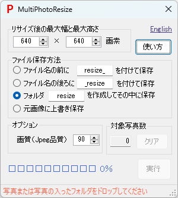
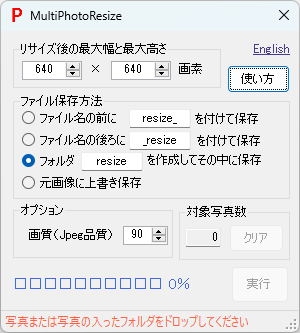

AIでカメを検出する
はじめに（予備知識）
- 物体検出を行う有名なAI深層学習モデルにYOLOがあるが、開発チームの異なる多くのバージョンが存在する。
2015 2016 2017 2018 2019 2020 2021 2022 2023 2024 +-----+-----+-----+-----+-----+-----+-----+-----+-----+----- v1 v2 v3 Joseph Redmon氏 v4 v7 v9 Alexey Bochkovskiy氏、Chien-Yao Wang氏チーム v5 v8 Ultralyticsチーム v6 Meituanチーム v10 精華大学チーム
- 近年は主にChien-Yao Wang氏チームとUltralyticsチームが最新バージョンの公開を競っている印象がある。
- 性能と使い勝手の両方において先行バージョンの良いところを取り入れる形で進化しているため、基本的に新しいバージョンほど高性能で使い勝手が良いが、 実用的な観点では、2020年のYOLO v5以降は使い勝手が似ており、YOLOのバージョンの違いよりも用意する学習データの違いが最終的な検出性能を左右する。
- 最近のYOLOは、当初からの物体検出にとどまらず、対象物の領域検出や追跡またヒトの姿勢推定などもサポートしている。
- 歴代のYOLOには、MicrosoftのCOCOデータセットを学習させた学習済モデルが付属しているが、COCOデータセットにカメが含まれていないため、 自前でカメを学習させたモデルを作成しない限り、カメを検出することができない。 試しにCOCO学習済モデルで検出させるとイシガメを「bird」と誤って検出した。
- ここでは我が家のイシガメを学習させた物体検出モデルを作成して検出してみる。もしかしたらAIでカメを検出した世界初の事例かもしれない。 使用するAIモデルは、2023年にUltralyticsチームが公開したYOLO v8。
物体検出AIモデルの準備
- Ultralytics版YOLO公式サイトの記載（2024年9月時点）にしたがってインストールする。コマンド1発でインストールできる。
pip install ultralytics
- 2024年9月時点ではYOLO ver8.2.86がインストールされた。
- 必要に応じてPython仮想環境およびPyTorch環境（CUDAを含む）を用意してからインストールする （この説明文でおおよその作業内容がイメージできない場合は、計算機利用に慣れた専門家に協力を依頼するのが現実的）。
学習データの準備
- 撮影映像からフレーム画像を取り出し、対象物の映っているフレームを選別する。
PhotoTools65のツール[VideoFrames]は映像からFPS値を指定して取り出したフレーム画像を連番ファイル名で保存できる。

- 選別したフレーム画像から学習用画像を切り出しサイズを調整する。YOLOの学習用画像は640x640サイズにしておくのが好都合なので、
フレーム画像から対象物の映っている正方形領域を切り出し、切り出した画像を640x640サイズに調整する。
PhotoTools65のツール[PhotoCrop]は写真または映像を指定領域で切り抜くことができるが、写真切り抜き時に元画像に上書き保存できるため効率的に切り出せる。
また、PhotoTools65のツール[MultiPhotoResize]は、複数写真を指定サイズに収まるように一括でリサイズできる。
 

- 物体検出用のアノテーションを実行する。 専用のアノテーションツールを利用して、画像ごとに対象物の名前（実際には対象物番号）と矩形座標が書かれたラベルデータを作成する。 多くのアノテーションツールがあり好みで選べば良いが、YOLO形式のラベルデータを作成できるツールが便利である。
- 画像とラベルを、学習用と検証用におおむね8:2の比率で分けて、以下の例に示すようなフォルダ構成で格納する。
画像格納フォルダパスのimagesをlabelsに置き換えるとラベル格納フォルダパスになるフォルダ構成になっていれば良い。
C:/dev/yolo/data/ +- images/ | +- train/ <- 学習用画像格納フォルダ C:\dev\yolo\data\images\train\ | +- val/ <- 検証用画像格納フォルダ C:\dev\yolo\data\images\val\ +- labels/ +- train/ <- 学習用ラベル格納フォルダ C:\dev\yolo\data\labels\train\ +- val/ <- 検証用ラベル格納フォルダ C:\dev\yolo\data\labels\val\
- 学習用の設定ファイル[mydata.yaml]をテキストエディタで作成する（以下は例）。
path: C:\dev\yolo\data # train,val共通パス train: images\train # 学習用画像フォルダ val: images\val # 検証用画像フォルダ nc: 4 # クラス数（対象物の数） names: ['turtle','fish','shrimp','snail'] # クラス名（対象物の名前）
学習（訓練）
- Ultralytics版YOLO公式サイトの記載（2024年9月時点）にしたがって学習（訓練）する。
- テキストエディタで訓練スクリプト[train.py]を作成する。
from ultralytics import YOLO if __name__ == '__main__': model = YOLO("yolov8n.pt") results = model.train(data='mydata.yaml', epochs=100, imgsz=640)- YOLO v8にはサイズおよび精度の異なる5種類のモデルn,s,m,l,xがあり、この順にサイズが大きくなり処理時間が長くなる。ここでは最も小さいnモデル（yolov8n.pt）をもとに学習する。
- PC環境によっては、batchやworkersの値を明示的に指定する必要がある（例、"batch=8, workers=4"）。
- 訓練スクリプト[train.py]を実行する。
python train.py
- yolov8n.pt が無い場合は最初に yolov8n.pt がダウンロードされる。
- 学習結果が runs\detect\train フォルダに格納される。
- weights\last.ptが最終の学習モデル（重みデータ）で、weights\best.ptが最も精度が良かった学習モデル（重みデータ）である。
- 学習状況を可視化した図 results.png が保存されている。例を示す。

- lossが下がって落ち着けば学習が進んで収束したことを意味し、mAPは推論精度で学習モデルの性能を表す。
- result.png以外にもAI分類モデルの性能評価指標の推移曲線が多く保存されている。
検出（推論）
- Ultralytics版YOLO公式サイトの記載（2024年9月時点）にしたがって検出（推論）する。
- テキストエディタで推論スクリプト[detect.py]を作成する。
from ultralytics import YOLO model = YOLO('./runs/detect/train/weights/best.pt') results = model("movie.mp4, save=True, conf=0.5)- 最も精度が良かった学習モデル best.pt を使用して、映像ファイル movie.mp4 から検出（推論）し、信頼度スコア0.5以上の検出結果を出力する。
- 推論スクリプト[detect.py]を実行する。
python detect.py
- 検出結果（映像）が runs\detect\predict フォルダに元映像と同じファイル名で格納される。